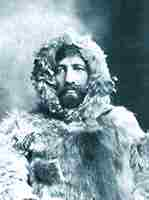
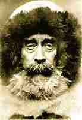

Who Was
First at the North Pole
In the early part
of this century, two explorers laid claim to the discovery of the North
Pole. Dr. Frederick A. Cook said he reached the top of the world in
April 1908, a full year earlier than Robert E. Peary, but the social
and scientific establishment of the time backed Peary. Now, an
exhaustively researched book claims to finally settle the dispute:
Neither Cook nor Peary made it to the Pole. That's the conclusion of
Cook & Peary: The Polar Controversy Resolved (Stackpole Books),
written by Robert M. Bryce, a research librarian at Montgomery College
in Rockville, Maryland.
Although
Peary's supporters have included heavyweights like the National
Geographic Society, several major books have discredited his claims.
Peary's tidy diary, for instance, should instead have been marked with
walrus grease and the poor penmanship of a man writing in the dark and
numbing cold. The diary pages for the days Peary claimed to be at the
North Pole are blank. And his testimony before Congress in 1911 was
marred by contradictions and inexplicable memory lapses.
Cook's
claim, however, has not been so carefully investigated. Yet it too is
fraudulent, says Bryce. Like Peary, Cook reported traveling at
incredible speeds -- averaging more than 15 miles a day over the rough
ice pack of huge, drifting blocks. Cook's field notes show an ignorance
of the mathematical concepts used to calculate latitude. Most damning
of all, Bryce's research turned up a forgotten photocopy of a notebook
containing evidence that Cook "cooked the books." Pages were erased and
renumbered, dates were written over, and Cook's original observations
did not match his published field notes. These discrepancies, writes
Bryce, "suggest that Cook was improving his story as he went along."
So who was
first at the North Pole? Commander Richard E. Byrd and his pilot flew
over it in May 1926. But not until 1995 did Richard Weber and Mikhail
Malakhov become the first to make an unaided round trip to the Pole.--
D.S.
|

Dr.
Frederick A. Cook said he
was there a year earlier.
|

Robert
E. Peary laid claim to
the Pole in 1909.
|
|